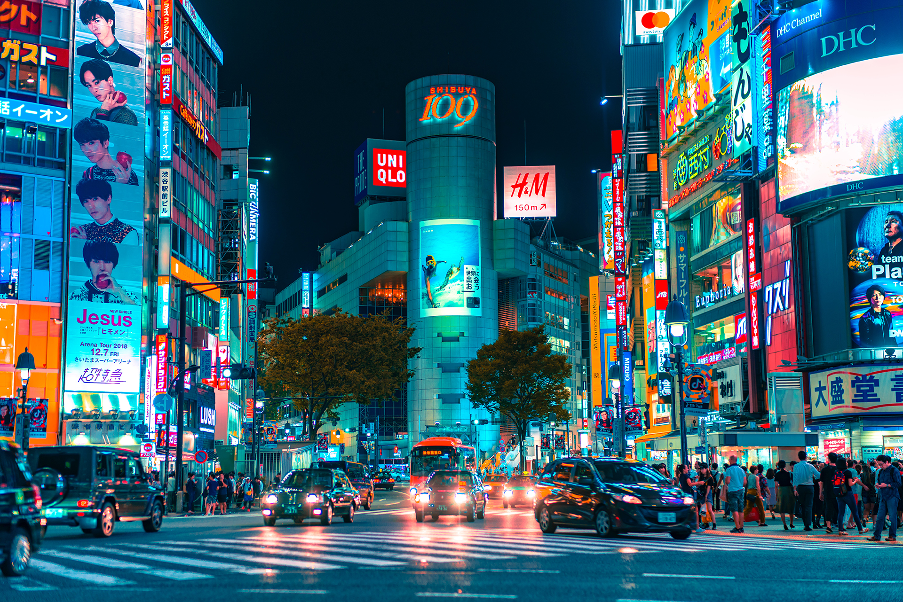
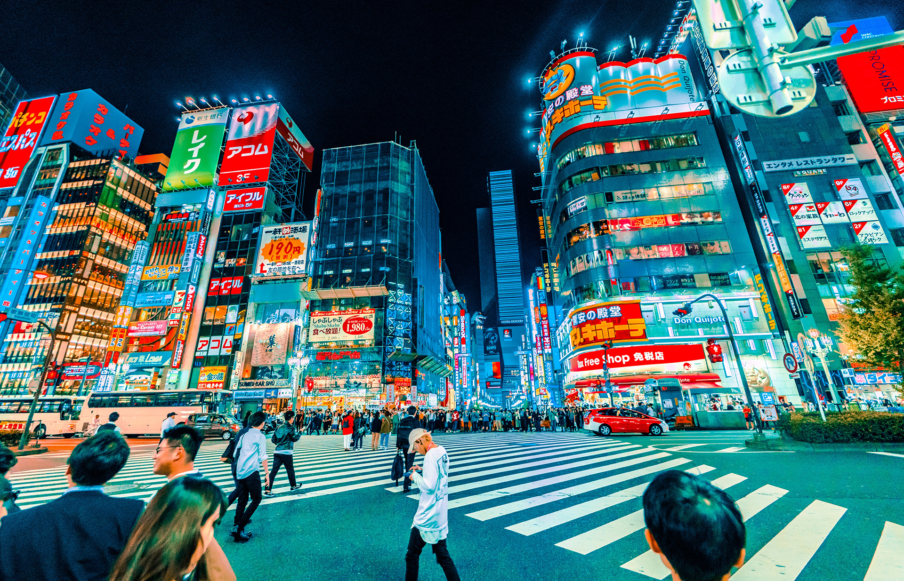
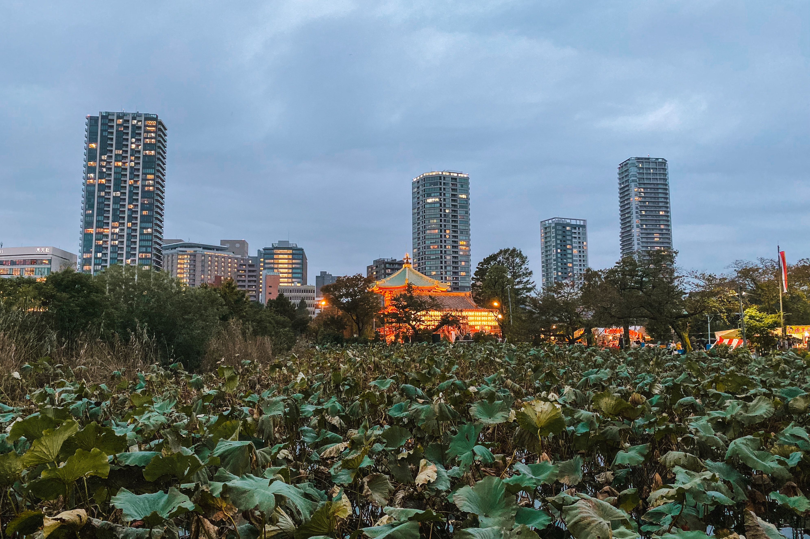

Shibuya 渋谷区
Shibuya is a special ward in Tokyo, Japan. A major commercial and business center, it houses the two busiest railway stations in the world, Shinjuku Station and Shibuya Station.
Read moreShinjuku 新宿区
Shinjuku is a special ward in Tokyo, Japan. It is a major commercial and administrative centre, housing the northern half of the busiest railway station in the world and the Tokyo Metropolitan Government Building, the administration centre for the government of Tokyo.
Read moreAsakusa 浅草

Asakusa is a district in Taitō, Tokyo, Japan, famous for the Sensō-ji, a Buddhist temple dedicated to the bodhisattva Kannon. There are several other temples in Asakusa, as well as various festivals.
Read moreUeno 上野
Ueno is a district in Tokyo's Taitō Ward, best known as the home of Ueno Park. Ueno is also home to some of Tokyo's finest cultural sites, including the Tokyo National Museum, the National Museum of Western Art, and the National Museum of Nature and Science, as well as a major public concert hall.
Read more